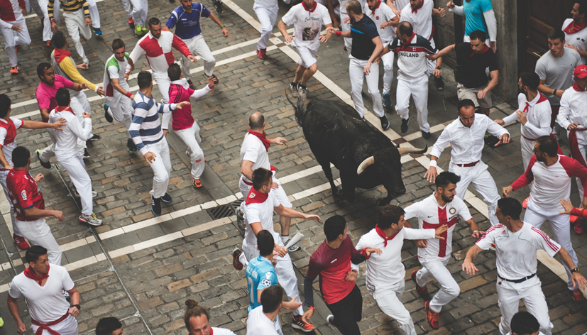
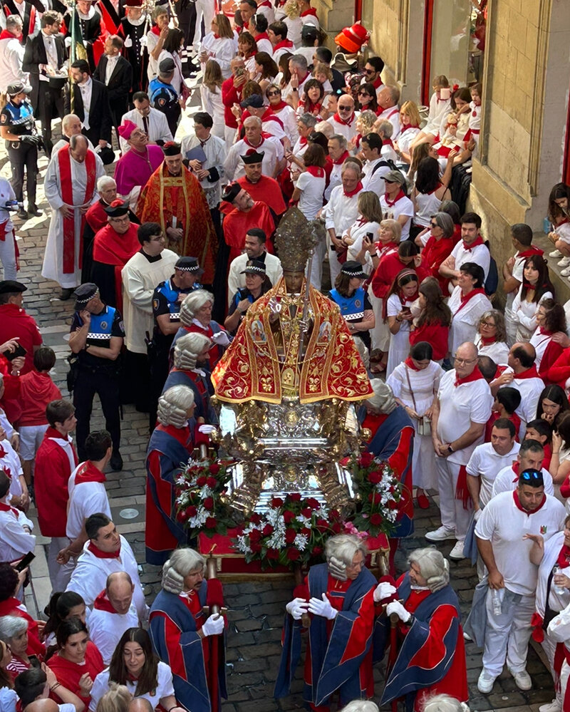

Cómo vivir San Fermín
Guías profundas y realistas sobre el encierro, chupinazo, peñas, ritmo de la fiesta y cómo vivir San Fermín con autenticidad más allá de lo turístico.
Destacados


Más consejos

Ver el encierro desde un balcón privado
Todo lo que nadie te cuenta sobre balcones: tipos, tramos, diferencias reales con la calle y factores que marcan la experiencia.
Leer guía
Experiencias personalizadas en Pamplona
Diseñamos tu San Fermín exactamente como quieres vivirlo. Combinamos balcones, momentos y detalles según tus preferencias, grupo y forma de entender la fiesta.
Leer guía
Hospitality corporativo en San Fermín
Experiencias privadas y a medida para empresas en San Fermín. Balcones exclusivos, momentos clave y acompañamiento local para fortalecer relaciones y crear recuerdos corporativos diferentes.
Leer guía
Mañanas sanfermineras guiadas
Una manera distinta de entender la ciudad durante las fiestas.
Leer guía
Guía para vivir San Fermín por primera vez
Todo lo esencial y lo que nadie te cuenta si vas por primera vez a San Fermín. Cómo organizarte, qué esperar y cómo vivirlo con criterio, descanso y sentido.
Leer guíaPrograma de San Fermín 2026
Horarios, ubicaciones y actos del programa oficial de San Fermín 2026, organizados por temática. Con mapa interactivo para explorar qué ocurre en cada punto de la ciudad y cuándo.
Leer guía
Cómo vivir San Fermín evitando lo turístico
Descubre la cara real de San Fermín: peñas, dianas, mañanas sanfermineras y momentos que solo se viven cuando entiendes de verdad cómo funciona la fiesta.
Leer guía
San Fermín desde dentro
Una visión real y profunda de San Fermín lejos del turismo superficial. Cómo entender y vivir la fiesta desde el conocimiento local y la experiencia heredada.
Leer guía
San Fermín más allá del encierro
Descubre otros momentos y experiencias que forman parte de San Fermín más allá del encierro.
Leer guía
Cómo ver el encierro de Pamplona
Todo lo que necesitas saber para decidir dónde y cómo ver el encierro: tramos, diferencias entre calle, vallado y balcón, y consejos reales para vivirlo con sentido.
Leer guía
Cómo ver la Procesión de San Fermín
Guía práctica y respetuosa para vivir la procesión de San Fermín con el recorrido completo, horarios reales, momentos clave y mejores calles para entender y disfrutar este momento tradicional.
Leer guíaCuéntanos qué te gustaría vivir y te ayudamos a diseñar una experiencia a tu medida.